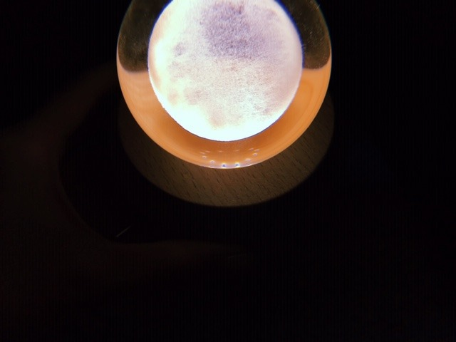

2019/0301Friビタミンとらなきゃね
バスラについてのブログは次回あげます
今書いてるのでお待ちを〜
昨日、おとといと2日続けて寝る前に
はっさくを食べています
だから何ってわけではないです
ただの報告です
風邪をひいていたのでお母さんがむいてくれて
それをひたすらムシャムシャ食べていました(^-^)
伊予柑とかはっさくとか金柑とか柑橘類は、
風邪で食欲のない日に特に食べたくなります...

メロンもいちごもスイカもみかんも好きだけど
桃は毎日食べたいくらい好きだなぁ
早く桃がたくさんたべられる夏にならないかな？

水晶の乗ったオルゴール

天井に照らされて
マーガレットみたいな花が綺麗に咲いていました
暗すぎず明るすぎないこの灯された
ひっそりとした空間が心地よい日だってあるし
太陽に思いっきり当たりたい日だってあるし
人間の気分って本当に色々だなって。
毎日同じことの繰り返しじゃつまらないですよね
バスラ終わりにすぐ体調を崩してからは
最近はお家にいる時間が多いです
免疫力を高めて体を丈夫にして
2019年もだいすきなお仕事にたくさん取り組みたいです！もう元気になってきたので安心してね！！
わ〜〜〜
元気だぞぉ〜〜〜
ヨーグルト食べるぞぉ〜
最近は、Netflixでゴシップガールを見返してます
私はブレア派✨おしゃれで可愛くてわがまま気分屋お姫様だけど素直で憎めなくてすき

では
2019/03/01 19:36
コメント(451)
未央奈～～ん、
俺も柑橘系、、とくにデコポンが好きだよ。
体調くずしてたんだね。イッパイ寝ると良くなるよ～～。じゃ～あね。またね。
俺も柑橘系、、とくにデコポンが好きだよ。
体調くずしてたんだね。イッパイ寝ると良くなるよ～～。じゃ～あね。またね。
みおにゃん！！
お大事にね、
早く良くなりますよーに！
お大事にね、
早く良くなりますよーに！
へい未央奈(･∀･∩)
未央奈が元気になったなら良き(*´ー｀*)
俺は風邪で食欲が無くなることはないかな(^^;)(もしかして俺は鹿馬？。笑)
プリンなら食べられるんじゃないかー
未央奈の場合は、休日が固定じゃないから、なかなか思い通りにやりたいことのスケジュールが組めないのが難点だよな(◎-◎;)
明日グリーンブック見に行ってくるぞん..後、おぎゅーが酸素風呂(調べたら女子がメイン客層？)の話題を書いてたから、俺は岩盤浴に行くぞん..B'zのライチケ抽選に応募したぞん..当たったら独り寂しく行ってくるぞん..。笑
ほんとうは明日元NMBの山本彩さんが、じもってぃーのライブハウスでライブをするみたいだから観に行きたかったんだけど、明日用事がハハ..(^^;)
365日の紙飛行機好き
夜更かしせずに早く寝て体調整えなよーおやすみおなー
未央奈が元気になったなら良き(*´ー｀*)
俺は風邪で食欲が無くなることはないかな(^^;)(もしかして俺は鹿馬？。笑)
プリンなら食べられるんじゃないかー
未央奈の場合は、休日が固定じゃないから、なかなか思い通りにやりたいことのスケジュールが組めないのが難点だよな(◎-◎;)
明日グリーンブック見に行ってくるぞん..後、おぎゅーが酸素風呂(調べたら女子がメイン客層？)の話題を書いてたから、俺は岩盤浴に行くぞん..B'zのライチケ抽選に応募したぞん..当たったら独り寂しく行ってくるぞん..。笑
ほんとうは明日元NMBの山本彩さんが、じもってぃーのライブハウスでライブをするみたいだから観に行きたかったんだけど、明日用事がハハ..(^^;)
365日の紙飛行機好き
夜更かしせずに早く寝て体調整えなよーおやすみおなー
初コメです！！！
4/28の握手会当たりました！！！
やっと堀ちゃんに会えるのでめっちゃ楽しみにしてます笑
4/28の握手会当たりました！！！
やっと堀ちゃんに会えるのでめっちゃ楽しみにしてます笑
グルタミンとった方がいいよ
未央奈～！！！
バスラお疲れさま(*^^*)
体調大丈夫？？気をつけてね！
治ってきたならよかった！！
個握当たったらまた会いに行くね！
バスラお疲れさま(*^^*)
体調大丈夫？？気をつけてね！
治ってきたならよかった！！
個握当たったらまた会いに行くね！
未央奈！ブログ更新ありがとう！
レコメン休んでたから、心配したよ！
今日も、とっても可愛くて、癒されたよ！
ゆっくり休んで、帰ってきてね！
みおなー！大好きだよ！
レコメン休んでたから、心配したよ！
今日も、とっても可愛くて、癒されたよ！
ゆっくり休んで、帰ってきてね！
みおなー！大好きだよ！
バースデーライブお疲れ様でした。
体調戻ってきてよかったです、お体お大事に。
体調戻ってきてよかったです、お体お大事に。
応援してるから、早く風邪なおしてね！！
ブログ更新ありがとうございます！
此れから日増しに暖かくなって行きますけれども体には気をつけて仕事頑張って頂きたいと思いますね！
3月の握手会楽しみにしてます
堀ちゃんバスラお疲れ様！
今はゆっくり休んでまた元気な顔見せてください！
今はゆっくり休んでまた元気な顔見せてください！
ブログ更新ありがとう！
ライブ終わりに体調崩したみたいだけど大丈夫？
ちゃんと休めてるのかな？
心配です…。
あまり無理しすぎないように頑張ってね
あとオルゴール綺麗だね
とっても映えてます(笑)
ライブ終わりに体調崩したみたいだけど大丈夫？
ちゃんと休めてるのかな？
心配です…。
あまり無理しすぎないように頑張ってね
あとオルゴール綺麗だね
とっても映えてます(笑)
誕生日～同盟のモノです☆
……(笑
お身体、お大事に…
健康を、お祈りし…
御活躍、期待します。
(^_^)
では…
……(笑
お身体、お大事に…
健康を、お祈りし…
御活躍、期待します。
(^_^)
では…
ブログの更新ありがとうございます。風邪ひいたと聞きました。無理をせずに頑張ってください。応援してます。
バスラお疲れ様でした。ありがとうございました。
体調管理にお気をつけ下さい。
同じくブレア派です。
体調管理にお気をつけ下さい。
同じくブレア派です。
体調管理って大事よね
こんばんは
なぁちゃん卒業コンサート
ステキすぎました
ありがとうございました
箸くんもありがとう☆
感慨深いものがありました
レコメン
タイムフリーで聴いたよ☆
ザンビ怖いけれど毎週huluで拝見しております！
アルバムも楽しみにしております！
なぁちゃん卒業コンサート
ステキすぎました
ありがとうございました
箸くんもありがとう☆
感慨深いものがありました
レコメン
タイムフリーで聴いたよ☆
ザンビ怖いけれど毎週huluで拝見しております！
アルバムも楽しみにしております！
ブログありがとう〜！
体調良くなって良かった(*ᴗˬᴗ)
早くみおなに会いたいな！
体調良くなって良かった(*ᴗˬᴗ)
早くみおなに会いたいな！
また元気な姿待っとるよー
4日間も全力疾走すれば体調も崩しますよ。
お大事に。
堀様軍団素晴らしかったですよ。
お大事に。
堀様軍団素晴らしかったですよ。
R-1飲みましょう！
お大事になさってください。
お大事になさってください。
私も最近はっさく食べる！！おんなじ(*´-`)
ブログ更新ありがとうございます！！
体調が治ったみたいで安心しました！！
755でも言ってたけど、またいつか女の子向けのブログもお願いします！笑
未央奈ちゃんのブログ見て、少しずつ興味が湧いてきました！ありがとうございます！
未央奈ちゃんのおすすめを使ってみたいです！
体調管理しっかりとしてくださいね！！
休む時はしっかり休んでくださいっっ！
体調が治ったみたいで安心しました！！
755でも言ってたけど、またいつか女の子向けのブログもお願いします！笑
未央奈ちゃんのブログ見て、少しずつ興味が湧いてきました！ありがとうございます！
未央奈ちゃんのおすすめを使ってみたいです！
体調管理しっかりとしてくださいね！！
休む時はしっかり休んでくださいっっ！
みおな、こんばんは(^_^)
体調不良でレコメンをお休みと知った時は、凄く心配しました(>_<)
でも、このブログを読んで、元気になりつつあると知ったので安心しました(^_^)
栄養をしっかりとって、ゆっくり休んで治してね(^_^)
お大事に(^_^)
それじゃ、またね(^o^)／
体調不良でレコメンをお休みと知った時は、凄く心配しました(>_<)
でも、このブログを読んで、元気になりつつあると知ったので安心しました(^_^)
栄養をしっかりとって、ゆっくり休んで治してね(^_^)
お大事に(^_^)
それじゃ、またね(^o^)／
かわいい
未央奈ー！を見て元気出る笑


未央奈ー！を見て元気出る笑
僕も桃大好き！水晶玉がのったオルゴール綺麗。風邪には気をつけて！バスラのブログ楽しみに待ってまーす！
未央ちゃんバスラお疲れさまでした。
大丈夫ですか？ リンゴもオススメ 僕は毎日のようにリンゴ食べてます
そのおかげか、風邪ひいてません
お大事に
大丈夫ですか？ リンゴもオススメ 僕は毎日のようにリンゴ食べてます
そのおかげか、風邪ひいてません
お大事に
風邪大丈夫？
体調には気をつけてね。
体調には気をつけてね。
個別握手会あたったよ
まずは全握！！
会いに行くからね
まずは全握！！
会いに行くからね
未央奈～こんばんは！
ぽてとです！
バスラお疲れ様。
体調大事にね(ノд<)
柑橘類は無性に食べたくなるときあるよね！
酸っぱいの苦手やけど食べたくなる不思議(笑)
じゃあまたね！
ぽてとです！
バスラお疲れ様。
体調大事にね(ノд<)
柑橘類は無性に食べたくなるときあるよね！
酸っぱいの苦手やけど食べたくなる不思議(笑)
じゃあまたね！
ぼくも柑橘系すきです！
バスラのブログも待ってるねー！
バスラのブログも待ってるねー！
はい可愛い
かわいいなあ
いつもブログありがとう
お疲れ様
身体を、自分を大切にね
いつもブログありがとう
お疲れ様
身体を、自分を大切にね
みおな☆
4日間おつかれさまでした☆
自分は23日、24日行きました。
なぁちゃん卒コンでの、「失恋お掃除人」良かったよー！
これからもお願いしますねー！！
みおなは、フルーツ好きなんだね〜！？
自分も柑橘類好きなんで食べてます。笑
また3月は忙しくなりそうで、、頑張ってね〜♬
4日間おつかれさまでした☆
自分は23日、24日行きました。
なぁちゃん卒コンでの、「失恋お掃除人」良かったよー！
これからもお願いしますねー！！
みおなは、フルーツ好きなんだね〜！？
自分も柑橘類好きなんで食べてます。笑
また3月は忙しくなりそうで、、頑張ってね〜♬
未央奈～ こんにちは
ブログ更新ありがとうございます。
もう元気になりましたか？
レコメンでは、プリン会のみり愛とあーちゃんが緊急の代打だったから心配していたんですが‥‥。でも、ありがたいメンバーですね。「猫舌」後なのに、夜遅くまで‥‥。
バスラの疲れが重なっての風邪ですか？ はっさくですか、私もさっき食べました。でんちゃんもそういえば柑橘類が大好きでしたよね。風邪をひいた時は口当たりのいい果物が一番ですよね。
でも、風邪は予防が一番、わたしは「かりん湯」でのどを守っていますよ。「かりん」ちゃんの力は有能ですよ。ぜひ、お試しあれ‥‥。
４日間のバスラ、本当におつかれさまでした。そしてたくさんの感動ありがとうございました。では、バスラのブログ更新、楽しみにしたいと思いますので、よろしくお願いします。
３月は全握・ミニライブが３回、お会いできること楽しみにしています。
ブログ更新ありがとうございます。
もう元気になりましたか？
レコメンでは、プリン会のみり愛とあーちゃんが緊急の代打だったから心配していたんですが‥‥。でも、ありがたいメンバーですね。「猫舌」後なのに、夜遅くまで‥‥。
バスラの疲れが重なっての風邪ですか？ はっさくですか、私もさっき食べました。でんちゃんもそういえば柑橘類が大好きでしたよね。風邪をひいた時は口当たりのいい果物が一番ですよね。
でも、風邪は予防が一番、わたしは「かりん湯」でのどを守っていますよ。「かりん」ちゃんの力は有能ですよ。ぜひ、お試しあれ‥‥。
４日間のバスラ、本当におつかれさまでした。そしてたくさんの感動ありがとうございました。では、バスラのブログ更新、楽しみにしたいと思いますので、よろしくお願いします。
３月は全握・ミニライブが３回、お会いできること楽しみにしています。
今日もお疲れ様でした！
個握当たらんかったから2次でまたかけるね
個握当たらんかったから2次でまたかけるね
乃木坂46にとって大切なメンバーだからあまり無理せずお身体を大切にして頑張って下さい！
堀ちゃん、ブログ更新ありがとう。
レコメン体調不良でお休みしたので体調が心配だったけど元気そうでなによりです。柑橘系や免疫力高い食べ物食べて体調万全にね。
レコメン体調不良でお休みしたので体調が心配だったけど元気そうでなによりです。柑橘系や免疫力高い食べ物食べて体調万全にね。
バレッタ衣装のみおな尊い…！
みおな体調しっかり治してねー！
食欲ない時に柑橘系たべたくなるってそれ食欲じゃないの？って思ったけどキニシナアーーイ！
食欲ない時に柑橘系たべたくなるってそれ食欲じゃないの？って思ったけどキニシナアーーイ！
堀さん、こんばんは。
蜜柑に八朔に伊予柑金柑と、冬は柑橘類が豊富な季節。ビタミンCとクエン酸で体の調子を整えて風邪なんか吹き飛ばしちゃえ！ というわけで、堀さんが早く元気になりますように。
水晶の乗ったオルゴールが天井に投げかける光模様が幻想的。天井にきれいに咲き誇る一輪の光の花が麗しい。でも堀さん、お花に例えるのでしたら、そこはマーガレットじゃなくてハルジオンでしょ（笑）。
ではまたコメントします。もうすぐ春ですね。
さらばだ、また会おう！（気球に乗って去りぬ〜）
蜜柑に八朔に伊予柑金柑と、冬は柑橘類が豊富な季節。ビタミンCとクエン酸で体の調子を整えて風邪なんか吹き飛ばしちゃえ！ というわけで、堀さんが早く元気になりますように。
水晶の乗ったオルゴールが天井に投げかける光模様が幻想的。天井にきれいに咲き誇る一輪の光の花が麗しい。でも堀さん、お花に例えるのでしたら、そこはマーガレットじゃなくてハルジオンでしょ（笑）。
ではまたコメントします。もうすぐ春ですね。
さらばだ、また会おう！（気球に乗って去りぬ〜）
未央奈ちゃん、こんばんは(^o^)/
俺は風邪気味だなって思ったらタラミのフルーツが入ったゼリーをよく食べますよ( ＾∀＾)
ゼリーだから喉が痛い時でも食べやすいしフルーツでビタミンも取れるし一石二鳥ですよ( ＾∀＾)
『アメトーーク3時間スペシャル』の絵心無い芸人に出演おめでとうございます( ＾∀＾)
俺は風邪気味だなって思ったらタラミのフルーツが入ったゼリーをよく食べますよ( ＾∀＾)
ゼリーだから喉が痛い時でも食べやすいしフルーツでビタミンも取れるし一石二鳥ですよ( ＾∀＾)
『アメトーーク3時間スペシャル』の絵心無い芸人に出演おめでとうございます( ＾∀＾)
未央奈ちゃん体調管理しっかりしてねぇ。
もうすぐ握手会あるから楽しみです。
もうすぐ握手会あるから楽しみです。
ブログ更新ありがとう風邪大丈夫ですかー
げんきになってから戻ってきてね
堀ちゃん ずっと好きだよ。
げんきになってから戻ってきてね
堀ちゃん ずっと好きだよ。
よく食べてよく寝て、お大事にしてくださいね
バスラで初めて生で未央奈見れてめっちゃ嬉しかったと思ったら、今度は初めて個握当たりました！(1枚だけだけど)
初めて一番の推しメンと握手ができる！今からとても楽しみにしています！
バスラで初めて生で未央奈見れてめっちゃ嬉しかったと思ったら、今度は初めて個握当たりました！(1枚だけだけど)
初めて一番の推しメンと握手ができる！今からとても楽しみにしています！
未央奈、こんばんは！！
お疲れ様です！！
無理はしないで、ゆっくり休んでね(ノ_＜)
今の時期はバタバタしてほんと忙しいと思います...
ゆっくり休めるきはやすませてね...
お疲れ様です！！
無理はしないで、ゆっくり休んでね(ノ_＜)
今の時期はバタバタしてほんと忙しいと思います...
ゆっくり休めるきはやすませてね...
堀ちゃんブログ更新ありがとう！
バスラお疲れ様！めちゃくちゃ頑張ってたみたいだね
れんたんのブログにも堀ちゃんの名前がでてくるあたり、ほんと仲間思いの自慢の推しメンです。
月刊エンタメ買ったよ！ザンビのインタビュー読みました。
演技していくにつれてどんどん演技力が上がっていったんだね。さすがです！
ホットギミックがザンビの撮影後だったってことはもっと素敵な堀さんが見られそうですねぇ。
体調も治ってきたみたいで安心しました。バスラ疲れかな？ちょっとは休めたでしょうか。ハッサク最近食べてないな〜、ビタミン取っていつもの元気な堀ちゃんの笑顔が見られれば本望です
いつもありがとう、モバメも755も、堀さんの都合のいいときでいいのですがいつも楽しみにしてます！
またかくね！
バスラお疲れ様！めちゃくちゃ頑張ってたみたいだね
れんたんのブログにも堀ちゃんの名前がでてくるあたり、ほんと仲間思いの自慢の推しメンです。
月刊エンタメ買ったよ！ザンビのインタビュー読みました。
演技していくにつれてどんどん演技力が上がっていったんだね。さすがです！
ホットギミックがザンビの撮影後だったってことはもっと素敵な堀さんが見られそうですねぇ。
体調も治ってきたみたいで安心しました。バスラ疲れかな？ちょっとは休めたでしょうか。ハッサク最近食べてないな〜、ビタミン取っていつもの元気な堀ちゃんの笑顔が見られれば本望です
いつもありがとう、モバメも755も、堀さんの都合のいいときでいいのですがいつも楽しみにしてます！
またかくね！
ブログ更新ありがとう
改めてバスラお疲れ様！
体調大丈夫？ゆっくり休んでね！
改めてバスラお疲れ様！
体調大丈夫？ゆっくり休んでね！
体調気をつけてね


バスラお疲れ様
体に気お付けてね
頑張ってね
未央奈ちゃん帰り道の握手会行くよー
ブログ更新ありがとう
大好きだよ
ザンビいいよ
ザンビ演技上手だよ